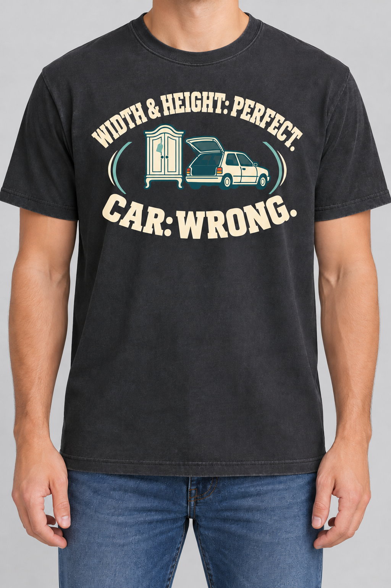

DLR-002 · PROVISIONAL RECIPE · REVISION 02
One setup. One unexpected verdict.
Original on the left; combined setup on the right. Both original image and frozen assessment are preserved. Revision awaits Founder review.
 Original
Original
HEIGHT dominates the upper arc; WIDTH is a smaller middle line.
Revision 02
WIDTH & HEIGHT share one setup. CAR: WRONG remains the payoff.Original visual recipe cards · Revision notes